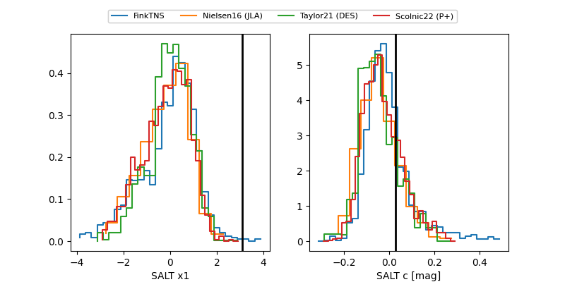

FINK: ZTF25abqkzaf
Lasair: ZTF25abqkzaf
ALeRCE: ZTF25abqkzaf
ZTF25abqkzaf (ztf,fink)
equatorial (ra, dec) = (347.4343,-0.61703)
galactic (l, b) = (76.0655,-53.96458)

last ztfg=20.43, ztfr=20.42
1 ztfg, 2 ztfr detections